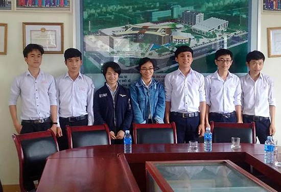

Mở thêm cơ hội du học

Lần cập nhật cuối lúc Thứ năm, 07 Tháng 9 2017 10:37 Viết bởi Administrator Thứ hai, 04 Tháng 9 2017 00:00
Lần đầu tiên, cùng lúc 7 học sinh Trường THPT chuyên Nguyễn Bỉnh Khiêm sẽ lên đường sang Nga du học. Cơ hội này tiếp tục được duy trì khi trường chuyên xác lập việc kết nối, hợp tác với các tổ chức quốc tế để mang về nhiều cơ hội vươn ra biển lớn hơn cho học trò xứ Quảng.

Bảy học sinh Trường THPT chuyên Nguyễn Bỉnh Khiêm nhận học bổng toàn phần du học tại Nga. Ảnh: LÊ QUÂN
Bảy cái tên của thế hệ 9X là Nguyễn Toàn, Võ Văn Duy, Nguyễn Văn Linh, Nguyễn Anh Tú, Nguyễn Thanh Thiện, Nguyễn Anh Thư và Nguyễn Thị Xuân Hoài đều là những học sinh xuất sắc của Trường THPT chuyên Nguyễn Bỉnh Khiêm niên khóa 2014 - 2017. Ở các bộ môn Toán học, Vật lý, Hóa học, Tin học, 7 em đã cùng với gần 170 học sinh THPT được Chính phủ Nga cấp học bổng toàn phần trong suốt 4 - 5 năm đại học. Năm nay, các cuộc thi Olympic cho 4 môn gồm tiếng Nga, Toán học, Vật lý và Tin học đã được tổ chức vào hồi tháng 3 tại 9 thành phố trên toàn quốc, thu hút sự tham gia của hơn 2.000 thí sinh. Thầy Lê Nguyên Bảng - Hiệu trưởng trường THPT chuyên Nguyễn Bỉnh Khiêm cho biết, Trung tâm Khoa học và Văn hóa Nga (KH&VH) chọn điểm Trường THPT chuyên Nguyễn Bỉnh Khiêm để tổ chức thi môn Vật lý cho các thí sinh miền Trung. “Đây cũng là điều đặc biệt khi chúng tôi đã kết nối được với tổ chức giáo dục của Nga để tạo điều kiện cho các em muốn học tập ở nước ngoài. Ngay đầu năm học, nhà trường đã chia sẻ tất cả những thông tin về các cơ hội học bổng để các em cố gắng” - thầy Bảng nói. Ngoài học bổng do Chính phủ Nga viện trợ, các bạn học sinh, sinh viên sẽ có cơ hội nhận thêm một khoản trợ cấp từ Chính phủ Việt Nam. Theo đại diện Bộ GD&ĐT, nếu đáp ứng đầy đủ điều kiện theo quy định về học bổng của Việt Nam, các bạn sẽ nhận thêm một khoản bù sinh hoạt phí của Chính phủ Việt Nam.
Các cuộc thi Opympic do Trung tâm KH&VH Nga tổ chức là hoạt động quan trọng thường niên nhằm quảng bá và phổ biến rộng rãi tiếng Nga và văn hóa Nga tại Việt Nam. Hàng năm, số lượng học bổng do Chính phủ Nga cấp cho Việt Nam ngày càng tăng. Ở khu vực miền Trung, Trung tâm KH&VH Nga tổ chức thi môn Tin học tại Trường chuyên Quốc học Huế; môn Toán tại Trường chuyên Lê Quý Đôn Đà Nẵng và môn Vật lý tại Trường THPT chuyên Nguyễn Bỉnh Khiêm Quảng Nam. Hiện tại, 7 em nhận học bổng là học sinh Trường THPT Chuyên Nguyễn Bỉnh Khiêm sẽ được học Trường Đại học Kỹ thuật quốc gia Moskva Bauman, Trường Đại học Bách khoa Saint Petersburg Peter Đại đế ở XanhPetecpua và Trường Đại học Dầu khí Liên bang Nga Gubkin ở Matxcova. Bạn Nguyễn Thị Xuân Hoài sẽ học tập tại Trường Đại học Kỹ thuật quốc gia Moskava Bauman cho biết: “Đây là cơ hội để cho tất cả các bạn cả nước nhận được một suất học bổng du học quý giá này. Là học bổng toàn phần được Chính phủ Liên bang Nga và Việt Nam tài trợ nên không phải lo lắng nhiều về kinh phí học tập và trang trải ở nước bạn”. Đối với học sinh THPT, các em sẽ phải vượt qua kỳ thi tốt nghiệp và đủ số điểm để đậu vào một trường đại học, như vậy mới đủ thủ tục để nhận học bổng. Và cả 7 em của Trường THPT Chuyên Nguyễn Bỉnh Khiêm đều đạt số điểm cao trong kỳ thi tốt nghiệp và đại học vừa rồi.
Tất cả 7 học sinh nhận suất học bổng đều chọn các khối ngành kỹ thuật để theo học. Không chỉ đơn thuần vì đây là thế mạnh của các em, mà sâu xa hơn, “chúng em nghĩ rằng để quê hương mình - vùng đất quanh năm gặp nhiều bão lũ, ít được thiên nhiên ưu đãi thì chỉ có khoa học và kỹ thuật mới có thể khiến quê hương mình vực dậy được. Vì thế chúng em đều chọn các khối ngành kỹ thuật để đi du học” - Xuân Hoài chia sẻ. Và cô gái nhỏ này thay lời cho những người bạn sẽ cùng em đi du học ở Nga vào cuối tháng 10 năm nay, tâm sự: “Tụi em muốn gửi lời cảm ơn chân thành đến tất cả thầy cô đã luôn sát cánh cùng chúng em, đã truyền cho chúng em rất nhiều động lực và cảm hứng cũng như những kiến thức vô cùng quý báu để chúng em nhận được suất học bổng mà biết bao bạn đã mong ước. Đặc biệt chúng em muốn gửi lời cảm ơn sâu sắc đến thầy hiệu trưởng kính yêu, người đã mang lại cho chúng em rất nhiều cơ hội mà chúng em chưa bao giờ dám nghĩ tới, những cơ hội được du học nước ngoài để sau này được trở về góp sức mình xây dựng quê hương ngày càng phát triển”.
Bên cạnh việc đào tạo người tài, Trường THPT Chuyên Nguyễn Bỉnh Khiêm còn tạo nên một chiếc cầu nối, để giúp các em vươn ra “biển lớn”, ditnbk.edu.vnoài. Cùng với câu chuyện tìm kiếm những tổ chức quốc tế cũng như kết nối với các trường đại học lớn trên thế giới để tạo cơ hội “săn” học bổng du học cho các học sinh, hơn 5 năm nay, Trường THPT Chuyên Nguyễn Bỉnh Khiêm đã tạo điều kiện cho các em có cơ hội học tập ngôn ngữ với người bản xứ, từ những tình nguyện viên hợp tác với chương trình FullBright nhận trợ giảng dạy tiếng Anh tại trường. Thầy Hiệu trưởng Lê Nguyên Bảng cho biết thêm, thời gian tới, Trường THPT chuyên Nguyễn Bỉnh Khiêm sẽ hợp tác với Trường Đại học Tổng hợp quốc gia Kurgan - Nga tiến hành trao đổi học viên, chọn lựa học sinh đi du học. Bên cạnh đó, những chương trình tham quan, giao lưu học tập sẽ thường xuyên được tổ chức. Sau 15 năm thành lập, “chiếc nôi” đào tạo nhân tài của xứ Quảng đã có những quả ngọt từ sự nỗ lực của cả thầy và trò…
LÊ QUÂN (Báo Quảng Nam)
itnbk.edu.vn
itnbk.edu.vn